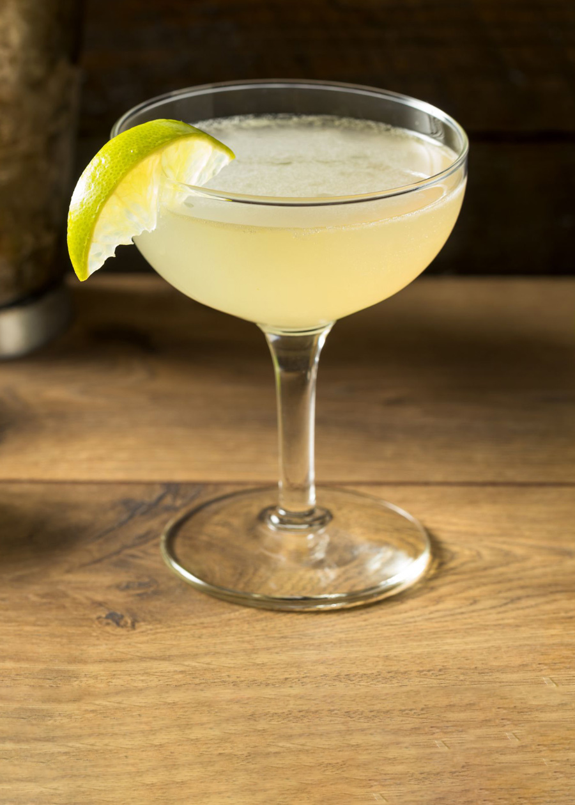

Daiquiri
Ingredients
- 2 oz white rum
- 1 oz fresh lime juice
- 3/4 oz simple syrup
- Lime wheel for garnish
- Ice
Instructions
- Combine rum, lime juice, and simple syrup in a shaker with ice.
- Shake well until chilled.
- Strain into a chilled coupe or cocktail glass.
- Garnish with a lime wheel and enjoy immediately.
Variations
- Frozen Daiquiri: Blend all ingredients with ice for a slushy treat.
- Strawberry Daiquiri: Add fresh strawberries or strawberry purée.
- Spiced Rum Daiquiri: Use spiced rum for a warm, aromatic twist.
History
The Daiquiri originated in early 20th-century Cuba, named after a beach and an iron mine near Santiago de Cuba by American engineer Jennings Cox
The Daiquiri was named after a beach and an iron mine near Santiago de Cuba.
The drink gained popularity in the U.S. during Prohibition and was favored by figures like Ernest Hemingway and President John F. Kennedy.